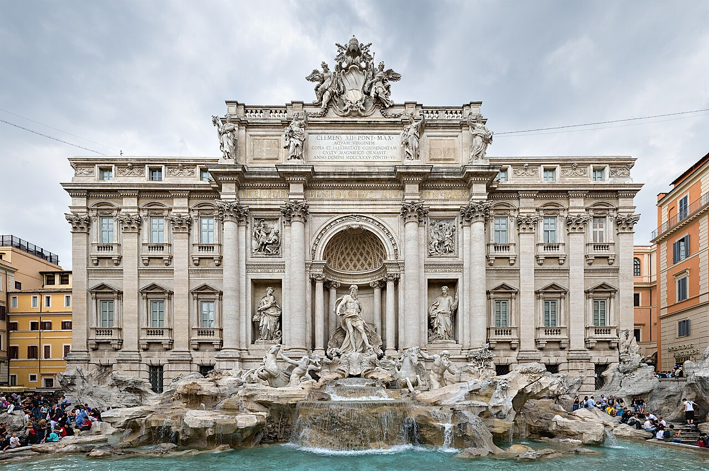
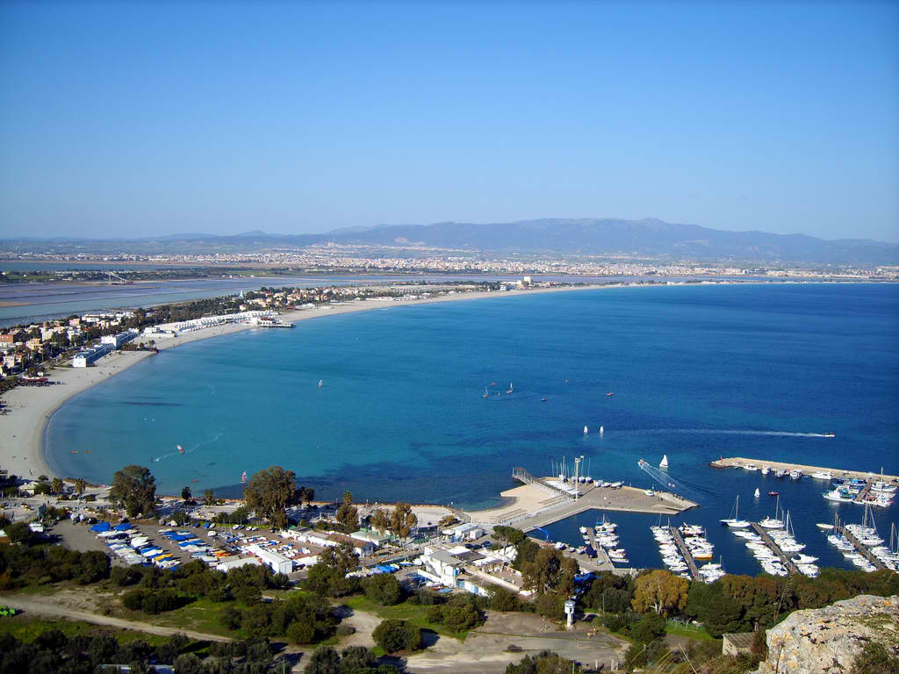

Foto, fonti e privacy
Dati e fonti
I valori riportati hanno fonte e data; i servizi variabili si consultano sui canali ufficiali.
Privacy
Lingua, preferiti e itinerario sono salvati nel tuo browser. Le domande FAQ restano nel browser.
Per l’uso offline il browser conserva sul dispositivo pagine e risorse recenti.
Licenza del codice e crediti fotografici
Codice MIT; immagini con licenze separate.
roma

Fotografia della città, non dell’attività. Diliff — Wikimedia Commons · CC BY 3.0 Autore: Diliff. CC BY 3.0. Immagine ridimensionata e visualizzata con ritaglio CSS; originale collegato.
napoli

Fotografia della città, non dell’attività. Richard Nevell — Wikimedia Commons · CC BY-SA 4.0 Autore: Richard Nevell. CC BY-SA 4.0. Immagine ridimensionata e visualizzata con ritaglio CSS; originale collegato.
milano

Fotografia della città, non dell’attività. Jiuguang Wang — Wikimedia Commons · CC BY-SA 3.0 Autore: Jiuguang Wang. CC BY-SA 3.0. Immagine ridimensionata e visualizzata con ritaglio CSS; originale collegato.
cagliari

Fotografia della città, non dell’attività. Daniela — Wikimedia Commons · CC BY-SA 2.0 Autore: Daniela. CC BY-SA 2.0. Immagine ridimensionata e visualizzata con ritaglio CSS; originale collegato.
torino

Fotografia della città, non dell’attività. Gunnar Klack — Wikimedia Commons · CC BY-SA 4.0 Autore: Gunnar Klack. CC BY-SA 4.0. Immagine ridimensionata e visualizzata con ritaglio CSS; originale collegato.
firenze

Fotografia della città, non dell’attività. Gary Campbell-Hall — Wikimedia Commons · CC BY 2.0 Autore: Gary Campbell-Hall. CC BY 2.0. Immagine ridimensionata e visualizzata con ritaglio CSS; originale collegato.
venezia

Fotografia della città, non dell’attività. Didier Descouens — Wikimedia Commons · CC BY-SA 4.0 Autore: Didier Descouens. CC BY-SA 4.0. Immagine ridimensionata e visualizzata con ritaglio CSS; originale collegato.
palermo

Fotografia della città, non dell’attività. Julian Lupyan — Wikimedia Commons · CC0 Autore: Julian Lupyan. CC0. Immagine ridimensionata e visualizzata con ritaglio CSS; originale collegato.


Foto delle singole schede
Le didascalie identificano soggetto, autore e licenza.
Cagliari
- Quartiere Castello e le torri pisaneCastello, CagliariA. Saba · Wikimedia Commons · CC BY-SA 2.5http://www.cagliariturismo.it/it
- Bastione Saint Remy al tramontoBastione Saint RemyCristiano Cani · Wikimedia Commons · CC BY 2.0https://www.flickr.com/photos/cristianocani/2676021951/
- Anfiteatro romanoAnfiteatro romano di CagliariFollowingHadrian · Wikimedia Commons · CC BY-SA 4.0Own work
- Nora: la città sul mareNoraPjt56 --- If you use the picture outside Wikipedia I would appreciate a short e-mail to pjt56@gmx.net or a message on my discussion page · Wikimedia Commons · CC BY-SA 4.0Own work
- Tuvixeddu, la necropoli punicaNecropoli di Tuvixedducristianocani · Wikimedia Commons · CC BY 2.0https://www.flickr.com/photos/cristianocani/2904945548/
- Musei Nazionali: archeologia e PinacotecaMuseo archeologico di CagliariUnukorno · Wikimedia Commons · CC BY 4.0Own work
- La Fiera e i congressiCongresso alla Fiera Campionaria di Cagliari nel 1977, fotografia d’archivioSOC1971 · Wikimedia Commons · CC BY-SA 4.0Own work
- Aperitivo in MarinaQuartiere MarinaGiova81 · Wikimedia Commons · CC BY-SA 3.0Own work
- Bleisure: Villasimius o ChiaVillasimiusAnnalise Falzon (Malta) · Wikimedia Commons · CC BY-SA 4.0Own work
- Culurgiones e malloreddusCulurgionesandria · Wikimedia Commons · CC BY-SA 2.0Flickr
- Porceddu in agriturismoPorcedduJaps 88 · Wikimedia Commons · CC BY-SA 4.0Own work
- Fregola con arselleFregola cruda, esempio del prodottoEmily Parkhurst · Wikimedia Commons · CC BY-SA 2.0English-language Wikipedia
- Bottarga e ricci di mareBottarga, esempio del prodotto fotografato in GreciaΦωτογραφία: Χαράλαμπος Γκούβας (Harry Gouvas) el:User:Harrygouvas · Wikimedia Commons · CC BY-SA 3.0Own work by the original uploader
- Pane carasau, guttiau e pistoccuPane carasauLuigi Chiesa · Wikimedia Commons · CC BY 3.0Own work
- Pecorini e casizoluPecorino sardo, uno dei formaggi propostiJon Sullivan · Wikimedia Commons · Public domainhttp://www.public-domain-image.com/public-domain-images-pictures-free-stock-photos/food-and-drink-public-domain-images-pictures/cheese-public-domain-images-pictures/pecorino-sardo-cheese.jpg
- Mercato di San Benedetto, sede di piazza NazzariMercato di San Benedetto, edificio storicoFreek Janssens at nl.wikipedia · Wikimedia Commons · CC BY-SA 3.0Own work
- Fainè: la cecina cagliaritanaFarinata, esempio della preparazioneAlessio Sbarbaro User_talk:Yoggysot · Wikimedia Commons · CC BY-SA 3.0Own work
- Sebadas e vernacciaSebadasPietro Di Fontana · Wikimedia Commons · CC BY-SA 4.0Own work
- Santuario di BonariaSantuario di BonariaMarcan44 · Wikimedia Commons · CC BY-SA 4.0Own work
- Il Duomo di CastelloDuomo di CagliariGian Luca Sgaggero · Wikimedia Commons · CC BY 2.0https://www.flickr.com/photos/sphimm/53044918340/
- Cripta di Santa RestitutaSanta RestitutaGiova81 · Wikimedia Commons · CC BY-SA 3.0Own work
- Sant'Efisio: il voto del 1° maggioFesta di Sant’Efisio, fotografia d’archiviocristianocani · Wikimedia Commons · CC BY 2.0https://www.flickr.com/photos/cristianocani/2456303151/in/photostream/
- Poetto: la spiaggia dei cagliaritaniSpiaggia del PoettoDaniela · Wikimedia Commons · CC BY-SA 2.0Poetto
- Calamosca e il faroCalamoscaGiuliacherchi · Wikimedia Commons · CC BY-SA 4.0Own work
- Giardini pubblici e Orto BotanicoOrto Botanico di CagliariMago Tecnologico · Wikimedia Commons · CC BY-SA 3.0Mago Tecnologico
- Giardini Pubblici: una pausa nel verdeGiardini Pubblici di Cagliaricristianocani · Wikimedia Commons · CC BY 2.0https://www.flickr.com/photos/cristianocani/2580808464/
- Partita del CagliariStadio Unipol DomusSandrino 14 · Wikimedia Commons · CC BY-SA 4.0Own work
- Poetto: camminata sul lungomareLungomare del PoettoDaniela · Wikimedia Commons · CC BY-SA 2.0Poetto
- SUP e kayak a CalamoscaCalamosca, luogo della propostaGiuliacherchi · Wikimedia Commons · CC BY-SA 4.0Own work
- Vela nel golfo degli AngeliCagliari e il golfo, contesto della propostaprc74 · Wikimedia Commons · CC BY 2.0Flickr
- Marina: il quartiere del portoQuartiere MarinaGiova81 · Wikimedia Commons · CC BY-SA 3.0Own work
- Villanova tra orti e vicoliVia San Giacomo nel quartiere VillanovaGiova81 · Wikimedia Commons · CC BY-SA 3.0Own work
- Molentargius: fenicotteri in cittàParco di MolentargiusMartinam01 · Wikimedia Commons · CC BY-SA 4.0Own work
- Sella del Diavolo: trekking urbanoSella del DiavoloRedef87 · Wikimedia Commons · CC BY-SA 4.0Own work
- Taccuino: forme dei culurgionesCulurgiones, tema del taccuinoandria · Wikimedia Commons · CC BY-SA 2.0Flickr
- Taccuino: geometrie del panePane carasau, tema del taccuinoLuigi Chiesa · Wikimedia Commons · CC BY 3.0Own work
- Barumini: la civiltà nuragicaSu Nuraxi di BaruminiNorbert Nagel · Wikimedia Commons · CC BY-SA 3.0Own work
- Piazza San GiacomoVia San Giacomo nel quartiere Villanova, contesto della piazzaGiova81 · Wikimedia Commons · CC BY-SA 3.0Own work
- Via San GiovanniChiesa di San Giovanni in via San Giovanni, VillanovaGiova81 · Wikimedia Commons · CC BY-SA 3.0Own work
- Giardini PubbliciGiardini Pubblicicristianocani · Wikimedia Commons · CC BY 2.0https://www.flickr.com/photos/cristianocani/2580808464/
- Molentargius, ingresso di via La PalmaParco di Molentargius, veduta del parcoMartinam01 · Wikimedia Commons · CC BY-SA 4.0Own work
- Edificio Sali Scelti, esterniSaline di Cagliari, complesso del saleFabiocarboni · Wikimedia Commons · CC BY-SA 3.0Own work
- Poetto, passeggiataPasseggiata del PoettoDaniela · Wikimedia Commons · CC BY-SA 2.0Poetto
- Sant’Efisio, esterniChiesa di Sant’EfisioGiova81 · Wikimedia Commons · CC BY-SA 3.0Own work
- Cripta di Santa RestitutaSanta RestitutaGiova81 · Wikimedia Commons · CC BY-SA 3.0Own work
- Orto Botanico di CagliariOrto Botanico di CagliariMago Tecnologico · Wikimedia Commons · CC BY-SA 3.0Mago Tecnologico


.jpg){kind=link}


_1.jpg){kind=link}


.jpg){kind=link}


Firenze
- Gli UffiziGalleria degli UffiziArek N. · Wikimedia Commons · CC BY-SA 3.0https://web.archive.org/web/20161101071109/http://www.panoramio.com/photo/113389208
- Il David alla Galleria dell'AccademiaGalleria dell’AccademiaRhododendrites · Wikimedia Commons · CC BY-SA 4.0Own work
- La cupola del BrunelleschiCupola di Santa Maria del FioreGary Campbell-Hall · Wikimedia Commons · CC BY 2.0https://www.flickr.com/photos/garyullah/21208048669/
- Palazzo Vecchio e la torrePalazzo VecchioFrancesco Bini · Wikimedia Commons · CC BY-SA 4.0Own work
- Palazzo Pitti e BoboliPalazzo PittiAlmaak · Wikimedia Commons · CC BY-SA 3.0Own work
- Piazzale Michelangelo al tramontoPiazzale MichelangeloCEphoto, Uwe Aranas · Wikimedia Commons · CC BY-SA 3.0Own work
- Fiesole: la collina romanaFiesoleHagai Agmon-Snir حچاي اچمون-سنير חגי אגמון-שניר · Wikimedia Commons · CC BY-SA 4.0Own work
- Fortezza da Basso e i congressiFortezza da Bassosailko · Wikimedia Commons · CC BY-SA 3.0Self-photographed
- Aperitivo sopra i tettiVeduta dei tetti di Firenze, contesto della propostaInfrogmation · Wikimedia Commons · CC BY-SA 4.0photo taken by Infrogmation
- Bleisure: le strade del ChiantiPaesaggio del ChiantiAdbar · Wikimedia Commons · CC BY-SA 3.0Own work
- Bistecca alla fiorentinaBistecca alla fiorentinamike packard · Wikimedia Commons · CC BY-SA 2.0bistecca alla fiorentina auf flickr
- Ribollita e pappa al pomodoroRibollitaTa4e Negodue · Wikimedia Commons · CC BY-SA 4.0Own work
- Lampredotto: il panino dal trippaioLampredottoLucarelli · Wikimedia Commons · CC BY-SA 3.0Own work
- Mercato Centrale e Sant'AmbrogioMercato CentraleSailko · Wikimedia Commons · CC BY 3.0Own work
- Gelato: l'invenzione fiorentinaGelato, esempio del prodottoEquipmentAndConcepts · Wikimedia Commons · CC BY-SA 4.0Own work
- Cantucci e vin santoCantucciGwang17-Blog: intoafoodcoma.wordpress.com · Wikimedia Commons · CC BY-SA 4.0https://intoafoodcoma.wordpress.com/2015/09/17/i-cantucci-ni/
- Le buchette del vino e le fiaschetterieBuchetta del vinoUser:Mattes · Wikimedia Commons · Public domainOwn work
- Chianti in enotecaVino Chianti, tema della propostaAdbar · Wikimedia Commons · CC BY-SA 3.0Own work
- Caffè storici: Gilli e ProcacciCaffè GilliFreepenguin · Wikimedia Commons · CC BY-SA 3.0Own work
- Taccuino: leggere un menu contemporaneoMercato Centrale, contesto gastronomicoSailko · Wikimedia Commons · CC BY 3.0Own work
- Il Duomo e la cripta di Santa ReparataCattedrale di FirenzeGary Campbell-Hall · Wikimedia Commons · CC BY 2.0https://www.flickr.com/photos/garyullah/21208048669/
- San Miniato: i vespri dei monaciSan Miniato al MontePhotographer: Riccardo Speziari · Wikimedia Commons · CC BY-SA 3.0Own work
- Santa Croce: il pantheon d'ItaliaBasilica di Santa CroceRhododendrites · Wikimedia Commons · CC BY-SA 4.0Own work
- Scoppio del Carro: la Pasqua fiorentinaScoppio del Carro, fotografia d’archivioYair Haklai · Wikimedia Commons · CC BY-SA 4.0Own work
- MAD alle Murate: spazi che cambiano usoComplesso delle MurateoThis photo was taken by Susanna Giaccai. Feel free to use my photos, but please mention me as the author and if you want send me a message. or mailto:giaccai@pm.me · Wikimedia Commons · CC BY-SA 3.0Own work
- Giardino Bardini e il tunnel di gliciniGiardino BardiniFrancesco Bini · Wikimedia Commons · CC BY-SA 4.0Own work
- Le Cascine e il prato dell'ArnoParco delle CascineSailko · Wikimedia Commons · CC BY 2.5Own work
- La Viola all'Artemio FranchiStadio Artemio FranchiSailko · Wikimedia Commons · CC BY 3.0Own work
- Calcio Storico FiorentinoCalcio storico, fotografia d’archivioEpanto · Wikimedia Commons · CC BY-SA 4.0Own work
- Firenze Rocks e i concerti d'estateIppodromo delle Cascine, contesto dell’area Visarno; non una foto di un concertosailko · Wikimedia Commons · CC BY 2.5Self-photographed
- La maratona di FirenzeDuomo di Firenze, contesto cittadino della proposta; non una foto della garaGary Campbell-Hall · Wikimedia Commons · CC BY 2.0https://www.flickr.com/photos/garyullah/21208048669/
- San Frediano e le bottegheBorgo San Frediano, facciata dell’ex Cinema EoloFrancesco Bini · Wikimedia Commons · CC BY-SA 4.0Own work
- Santo Spirito: la piazza che viveSanto Spirito e piazzaLucarelli · Wikimedia Commons · CC BY-SA 3.0Own work
- Giardino delle RoseGiardino delle Rosesailko · Wikimedia Commons · CC BY 2.5Self-photographed
- Firenze all'alba: il centro nelle prime orePonte Vecchio, contesto del centro storicoIngo Mehling · Wikimedia Commons · CC BY-SA 4.0Own work
- Taccuino: forme della pastaPasta, tema del taccuinoDavid Adam Kess · Wikimedia Commons · CC BY-SA 4.0Own work
- Bottega: cuoio e carta marmorizzataCarta marmorizzata, esempio della tecnicaEncyclopaedia Britannica · Wikimedia Commons · Public domainEncyclopaedia Britannica, 1842 edition
- Uffizi con lo storico dell'arteUffizi, luogo della propostaArek N. · Wikimedia Commons · CC BY-SA 3.0https://web.archive.org/web/20161101071109/http://www.panoramio.com/photo/113389208
- MAD, Murate Art DistrictComplesso delle MurateoThis photo was taken by Susanna Giaccai. Feel free to use my photos, but please mention me as the author and if you want send me a message. or mailto:giaccai@pm.me · Wikimedia Commons · CC BY-SA 3.0Own work
- Piazza dei CiompiPiazza dei CiompiNo machine-readable author provided. Sailko assumed (based on copyright claims). · Wikimedia Commons · CC BY-SA 3.0No machine-readable source provided. Own work assumed (based on copyright claims).
- Mercato di Sant’AmbrogioMercato di Sant’Ambrogiosailko · Wikimedia Commons · CC BY 2.5Self-photographed
- Parco StibbertParco e Museo StibbertRhododendrites · Wikimedia Commons · CC BY-SA 4.0Own work
- Giardino dell’OrticolturaGiardino dell’OrticolturaIlya · Wikimedia Commons · CC BY-SA 4.0Own work
- Piazza della LibertàPiazza della LibertàMarcusObal · Wikimedia Commons · CC BY-SA 3.0Own work
- Manifattura Tabacchi, spazi apertiManifattura Tabacchisailko · Wikimedia Commons · CC BY 2.5Self-photographed
- Piazza PucciniTeatro Puccini presso la piazzaSailko · Wikimedia Commons · CC BY 2.5Own work
- Parco delle CascineParco delle CascineSailko · Wikimedia Commons · CC BY 2.5Own work
.jpg){kind=link}
.jpg){kind=link}


_Piazza_della_Repubblica.jpg){kind=link}

.jpg){kind=link}


_by_David_Adam_Kess_(pic.2).jpg){kind=link}


.jpg){kind=link}


Milano
- Duomo e le terrazzeDuomo di MilanoJiuguang Wang · Wikimedia Commons · CC BY-SA 3.0Own work
- Il Cenacolo di LeonardoSanta Maria delle Grazie, complesso del CenacoloMarcin Białek · Wikimedia Commons · CC BY-SA 3.0Own work
- Pinacoteca di BreraPinacoteca di BreraJean-Christophe BENOIST · Wikimedia Commons · CC BY 3.0Own work
- Castello Sforzesco e museiCastello SforzescoJakub Hałun · Wikimedia Commons · CC BY-SA 4.0Own work
- Galleria Vittorio Emanuele e il rito del toroGalleria Vittorio Emanuele IIMarco Pagani · Wikimedia Commons · CC BY 3.0Imported from 500px (archived version) by the Archive Team. (detail page)
- Fondazione Prada e il designFondazione PradaJay Dixit · Wikimedia Commons · CC BY 4.0Own work
- Teatro alla Scala e museoTeatro alla ScalaJohn Picken · Wikimedia Commons · CC BY 2.0https://www.flickr.com/photos/picken/5651520876/
- Fiera Milano Rho e i grandi saloniFiera Milanoböhringer friedrich · Wikimedia Commons · CC BY-SA 3.0Wikimedia Commons
- Aperitivo nel QuadrilateroQuadrilatero della modaGeobia · Wikimedia Commons · CC BY-SA 4.0Own work
- Bleisure: i laghi in trenoLago di Como, una delle mete proposteLuca Casartelli · Wikimedia Commons · CC BY-SA 2.0DSC_6340.jpg
- Risotto alla milanese e osso bucoOssobuco, esempio del piattoMogens Engelund · Wikimedia Commons · CC BY-SA 3.0Own work
- La cucina meneghina di stagioneCassoeula, esempio della cucina milaneseRemulazz · Wikimedia Commons · CC BY-SA 4.0Own work
- Apericena sui NavigliNavigli, luogo della propostaFlavmi · Wikimedia Commons · CC BY-SA 4.0Own work
- Camparino in GalleriaCamparinoChiara from London · Wikimedia Commons · CC BY-SA 2.0bar Zucca
- Pizza in nuova ondataPizza, esempio del prodottoigorovsyannykov · Wikimedia Commons · CC0Pixabay archive copy at the Wayback Machine
- Chinatown di via SarpiVia Paolo Sarpi, Chinatown di MilanoAnonymousUnknown author · Wikimedia Commons · Public domainSkyScraperCity (http://www.skyscrapercity.com/showthread.php?t=1232367&page=254)
- Mercato Centrale e street foodStazione Centrale, contesto del mercatoLudvig14 · Wikimedia Commons · CC BY-SA 4.0Own work
- Panzerotti di LuiniInsegna di Panzerotti Luini a MilanoRodrigo Pereira da S… · Wikimedia Commons · CC BY-SA 3.0https://web.archive.org/web/20161029211833/http://www.panoramio.com/photo/106945527
- Panettone e pasticceria storicaPanettoneN i c o l a from Fiumicino (Rome), Italy · Wikimedia Commons · CC BY 2.0Panettone - Nicolettone 2017 - IMG_7085
- Taccuino: linguaggi dei menuQuartiere Brera a Milanojillvb · Wikimedia Commons · CC BY 3.0https://web.archive.org/web/20161029145251/http://www.panoramio.com/photo/101897038
- Sant'Ambrogio, cuore della cittàBasilica di Sant’AmbrogioNovellón · Wikimedia Commons · CC BY-SA 4.0Own work
- San Bernardino alle OssaSan Bernardino alle OssaPaolobon140 · Wikimedia Commons · CC BY-SA 4.0Own work
- San Maurizio, la Sistina di MilanoSan Maurizio al Monastero MaggiorePaolobon140 · Wikimedia Commons · CC BY-SA 4.0Own work
- Santuario dei Miracoli a San CelsoSanta Maria presso San CelsoSaggittarius A · Wikimedia Commons · CC BY-SA 4.0Own work
- QC Terme, la spa urbanaPorta Romana, zona della spaVan Loon · Wikimedia Commons · CC BY-SA 3.0Own work
- Casa Museo Boschi Di StefanoCasa Museo Boschi Di StefanoLauraderiu · Wikimedia Commons · CC BY-SA 4.0Own work
- Bosco Verticale e i giardini di Porta NuovaBosco VerticaleJeronimo Alcala · Wikimedia Commons · CC BY 3.0Imported from 500px (archived version) by the Archive Team. (detail page)
- San Siro: derby e museiStadio San SiroSamoano~commonswiki · Wikimedia Commons · CC BY-SA 3.0Own work
- Gran Premio di MonzaAutodromo di MonzaAnk Kumar · Wikimedia Commons · CC BY-SA 4.0Own work
- Milano City MarathonMaratona di Milano, fotografia d’archivioJheywoodea · Wikimedia Commons · CC BY-SA 4.0Own work
- Fashion Week e Design WeekFashion Week, fotografia d’archivioJvpr1 · Wikimedia Commons · CC BY-SA 3.0Own work
- Navigli a piedi: alzaie e bottegheNavigliFlavmi · Wikimedia Commons · CC BY-SA 4.0Own work
- Isola: il villaggio tra le torriQuartiere IsolaJulian Lupyan · Wikimedia Commons · CC0Own work
- Parco Sempione, il giardino del CastelloParco SempioneAlessandro Perazzoli · Wikimedia Commons · CC BY-SA 4.0Own work
- La Martesana in biciNaviglio MartesanaFlavMi · Wikimedia Commons · CC BY-SA 3.0Own work
- Taccuino: ingredienti milanesiRisotto, tema del taccuinoNumber55 · Wikimedia Commons · CC BY-SA 3.0Own work
- Workshop di design e artigianatoTriennale, contesto del design milanesePhotograph by Mike Peel (www.mikepeel.net). · Wikimedia Commons · CC BY-SA 4.0Own work
- Il Cenacolo con lo storico dell'arteSanta Maria delle Grazie, complesso del CenacoloMarcin Białek · Wikimedia Commons · CC BY-SA 3.0Own work
- Casa Museo Boschi Di StefanoCasa Museo Boschi Di StefanoLauraderiu · Wikimedia Commons · CC BY-SA 4.0Own work
- Porta Venezia e piazza OberdanPorta VeneziaPaolobon140 · Wikimedia Commons · CC BY-SA 4.0Own work
- Albergo Diurno Venezia, accesso esternoAlbergo Diurno VeneziaLuca · Wikimedia Commons · CC BY-SA 2.0Flickr
- Cassina de’ PommCassina de’ PommYorick39 · Wikimedia Commons · CC BY 1.0Own work
- Martesana presso viale MonzaNaviglio Martesana, veduta del canaleFlavMi · Wikimedia Commons · CC BY-SA 3.0Own work
- Parco della MartesanaParco della MartesanaArbalete · Wikimedia Commons · Public domainOwn work
- Parco Industria Alfa RomeoParco Industria Alfa RomeoSavino.Martino · Wikimedia Commons · CC BY-SA 3.0Own work
- Piazza Gino VallePiazza Gino ValleZvone45 · Wikimedia Commons · CC BY-SA 4.0Own work
- ArtLine e parco CityLifeCityLife, paesaggio del quartierePaolobon140 · Wikimedia Commons · CC BY-SA 4.0Own work


.jpeg){kind=link}


.jpg){kind=link}


.jpg){kind=link}


_Altare_maggiore.jpg){kind=link}

_01.jpg){kind=link}

.jpeg){kind=link}

_04.jpg){kind=link}


,_Wikimania_2016,_MP_003.jpg){kind=link}


Napoli
- Napoli SotterraneaNapoli sotterraneaArmando Mancini from Napoli, Italia · Wikimedia Commons · CC BY-SA 2.0Napoli sotterranea
- Pompei ed Ercolano in trenoPompei, una delle mete proposteCarsten Steger · Wikimedia Commons · CC BY-SA 4.0Own work
- Museo Archeologico NazionaleMuseo Archeologico NazionalePhyrexian · Wikimedia Commons · Public domainOwn work
- Cappella Sansevero e il Cristo VelatoCappella SanseveroDavid Sivyer · Wikimedia Commons · CC BY-SA 2.0https://www.flickr.com/photos/argyle64/15225084721/
- Certosa e Castel Sant'ElmoCastel Sant’ElmoWolfgang Moroder · Wikimedia Commons · CC BY-SA 3.0Own work
- Spaccanapoli e i decumaniSpaccanapoliTatsuoTabei · Wikimedia Commons · Public domainOwn work
- Borgo Marinari e Castel dell’Ovo, solo esterniCastel dell’Ovo dall’esternoPaestumPaestum · Wikimedia Commons · CC BY-SA 4.0Own work
- Mostra d'Oltremare e congressiMostra d’OltremareBaku · Wikimedia Commons · CC BY-SA 4.0Own work
- Aperitivo a ChiaiaQuartiere ChiaiaJohnnyrotten at Italian Wikipedia · Wikimedia Commons · CC BY-SA 3.0Transferred from it.wikipedia to Commons.
- Bleisure: Sorrento e la costieraSorrentoKim Traynor · Wikimedia Commons · CC BY-SA 3.0Own work
- La via della pizza: Tribunali e SanitàVia dei TribunaliLuca Aless · Wikimedia Commons · CC BY-SA 4.0Own work
- Da Michele: la margherita canonicaAntica Pizzeria da MicheleHusky · Wikimedia Commons · CC BY 4.0Own work
- Pizza fritta e montanaraPizza fritta fotografata a Roma, esempio della preparazioneHorcrux · Wikimedia Commons · CC BY-SA 4.0Own work
- Pesce e cucina del golfo a MergellinaMergellinaNadia Alessandra Sassi · Wikimedia Commons · CC BY-SA 4.0Own work
- Sfogliatella e babàSfogliatellaSaggittarius A · Wikimedia Commons · CC BY-SA 4.0Own work
- Caffè e sospeso allo GambrinusCaffè GambrinusArmando Mancini · Wikimedia Commons · CC BY-SA 2.0Flickr: Napoli - Il Bar Gambrinus
- Mercato di Porta NolanaPorta Nolana, contesto del mercatoKen Mayer · Wikimedia Commons · CC BY 2.0https://www.flickr.com/photos/ken_mayer/14768875812/in/photolist-pC49wQ-mMdzb8-jXNDW9-iYWuNA-iivFRy-p2zgKD-ov74UX-ov5meS-odBtjR-nP4RP5-nNGaUs-nvY1XJ-iFb5vX-iyH1p1-haRGCs-guR1pf-guRzZn-guzpL9-fLojSH-faaf95-ekbEbD-ebG5Dk-csr57L-csqj63-csqbsm-bLj2nX-9MLPqW-9dwfpP-exGVCR-e2TDKF-e2pQwv-dZkw52-dZrdaG-dZktDg-cvQ5XY-dN1LDX-dN1ECP-dN7dk9-dN7f2w-dN7dRf-dKT4cB-csrbBm-csqThG-b9vgM8-9WcsdZ-9VNNH9-9KGVFk-9KGVeZ-9nfzUZ-8V3w8u/lightbox/
- Rosticceria: frittatina e crocchèCrocchè, esempio del prodottoEnzo Rippa · Wikimedia Commons · CC BY-SA 4.0Own work
- Taccuino: menu e paesaggioGolfo di Napoli, contesto della propostaWolfgang Moroder · Wikimedia Commons · CC BY-SA 3.0Own work
- Duomo e il Tesoro di San GennaroDuomo di NapoliMarco Ober · Wikimedia Commons · CC BY-SA 4.0Own work
- Il chiostro maiolicato di Santa ChiaraSanta ChiaraBerthold Werner · Wikimedia Commons · CC BY-SA 3.0Own work
- Gesù Nuovo, la facciata a diamanteGesù NuovoBerthold Werner · Wikimedia Commons · CC BY-SA 3.0Own work
- Catacombe di San GennaroCatacombe di San GennaroDominik Matus · Wikimedia Commons · CC BY-SA 4.0Own work
- Stufe di Nerone ai Campi FlegreiLucrino e Monte Nuovo, con il complesso delle Stufe di Nerone in bassoDenghiù · Wikimedia Commons · Public domainOwn work
- Ischia terme in giornataIschia, contesto dell’escursioneRetaggio · Wikimedia Commons · CC BY-SA 3.0Own work
- Parco Virgiliano, il golfo dall'altoParco VirgilianoDr.Conati Roberto De Martino · Wikimedia Commons · Public domainOwn work
- Stadio Diego Armando MaradonaStadio Diego Armando MaradonaGaetano Capaldo · Wikimedia Commons · CC BY 4.0Own work
- Murales di Maradona nei QuartieriQuartieri Spagnoli, zona dei muralesNadia Alessandra Sassi · Wikimedia Commons · CC BY-SA 4.0Own work
- Grandi eventi a Piazza del PlebiscitoPiazza del PlebiscitoBaku · Wikimedia Commons · CC BY-SA 4.0Own work
- Napoli City Half MarathonMezza maratona di Napoli, fotografia d’archivioLuigi Salatiello · Wikimedia Commons · CC0Imported from 500px (archived version) by the Archive Team. (detail page)
- Lungomare Caracciolo a piediLungomare CaraccioloFrancesco Boggia · Wikimedia Commons · CC BY 3.0https://web.archive.org/web/20161024112259/http://www.panoramio.com/photo/72211332
- Quartieri Spagnoli senza frettaQuartieri SpagnoliNadia Alessandra Sassi · Wikimedia Commons · CC BY-SA 4.0Own work
- Rione Sanità e Fontanelle, notizia di riaperturaCimitero delle FontanelleDominik Matus · Wikimedia Commons · CC BY-SA 4.0Own work
- Borgo di Santa LuciaBorgo Santa LuciaPoiesia · Wikimedia Commons · CC BY-SA 4.0Own work
- Taccuino: la pizza raccontata dai menuPizza napoletana, tema del taccuinoBex Walton from London, England · Wikimedia Commons · CC BY 2.0Neapolitan pizza at Trappica
- Taccuino: figure di San Gregorio ArmenoVia San Gregorio ArmenoPhoto2023 · Wikimedia Commons · CC BY 4.0Own work
- Tour con l'archeologo a PompeiPompei, luogo della propostaCarsten Steger · Wikimedia Commons · CC BY-SA 4.0Own work
- Piazzale San MartinoCertosa di San Martino, presso il piazzaleBernard Gagnon · Wikimedia Commons · CC BY 4.0Own work
- Pedamentina di San MartinoPedamentina di San MartinoUnknown authorUnknown author · Wikimedia Commons · Public domainhttps://www.facebook.com/photo.php?fbid=2760492707300125&set=p.2760492707300125&type=1&theater
- Montesanto e PignaseccaPignaseccaIlSistemone · Wikimedia Commons · CC BY-SA 3.0Own work
- Palazzo dello Spagnolo, esterniPalazzo dello Spagnoloalterdimaggio1957 · Wikimedia Commons · CC BY-SA 2.0Palazzo dello Spagnolo
- Cimitero delle FontanelleCimitero delle FontanelleDominik Matus · Wikimedia Commons · CC BY-SA 4.0Own work
- Santa Maria della Sanità e San GaudiosoSanta Maria della Sanitàoperapropria · Wikimedia Commons · Public domainBasilica Santa Maria della Sanità, Napoli
- Borgo Marinari, esterniBorgo MarinariTripiz at Italian Wikipedia · Wikimedia Commons · Public domainTransferred from it.wikipedia to Commons.
- Lungomare e Piazza VittoriaPiazza VittoriaArmando Mancini · Wikimedia Commons · CC BY-SA 2.0Flickr: Napoli - Piazza Vittoria
- Villa ComunaleVilla ComunaleJohnnyrotten · Wikimedia Commons · Public domainOwn work
.jpg){kind=link}
.jpg){kind=link}


.jpg){kind=link}


.jpg){kind=link}
_BW_2013-05-16_12-41-42.jpg){kind=link}
_-_BW_2013-05-16.jpg){kind=link}


.jpg){kind=link}


.jpeg){kind=link}


_31.jpg){kind=link}
.jpg){kind=link}

.jpg){kind=link}


Palermo
- Palazzo dei Normanni e Cappella PalatinaPalazzo dei NormanniLasterketak · Wikimedia Commons · CC BY-SA 4.0Own work
- Cattedrale e percorso monumentaleCattedrale di PalermoJulian Lupyan · Wikimedia Commons · CC0Own work
- Palazzo AbatellisPalazzo AbatellisBjs · Wikimedia Commons · CC0Own work Camera Canon EOS 300V with Canon Zoom Lens EF 28-90mm Scan from the film negative
- Museo archeologico SalinasMuseo SalinasHowRapid · Wikimedia Commons · Public domainOwn work
- Teatro Massimo, visita guidata ufficialeTeatro MassimoHolger Uwe Schmitt · Wikimedia Commons · CC BY-SA 4.0Own work
- Orto Botanico universitarioOrto Botanico di Palermotato grasso · Wikimedia Commons · CC BY-SA 2.5Own work
- Palazzo ButeraPalazzo ButeraStendhal55 · Wikimedia Commons · CC BY-SA 4.0Own work
- Galleria d’Arte ModernaGalleria d’Arte Moderna di PalermoUser:Matthias Süßen · Wikimedia Commons · CC BY-SA 4.0Own work
- Stanze al Genio, collezione di maiolicheMaioliche della Scala di Santa Maria del Monte a Caltagirone: immagine di contesto, non del museo Stanze al GenioRino Porrovecchio from Palermo, Italy · Wikimedia Commons · CC BY-SA 2.0Maioliche decorative
- Zisa, palazzo e paesaggioPalazzo della ZisaMatthias Süßen · Wikimedia Commons · CC BY-SA 4.0Own work
- Villino Florio, disegno e facciateVillino FlorioDavide Mauro · Wikimedia Commons · CC BY-SA 4.0Own work
- Cantieri Culturali alla ZisaCantieri Culturali alla ZisaMiceli vincenzo · Wikimedia Commons · CC BY-SA 4.0Own work
- Ecomuseo Mare Memoria VivaEcomuseo Mare Memoria VivaGiusiana86 · Wikimedia Commons · CC BY-SA 4.0Own work
- Santa Maria dello Spasimo, programma culturaleSanta Maria dello SpasimoBjs · Wikimedia Commons · CC0Own work Camera Canon EOS 300V with Canon Zoom Lens EF 28-90mm Scan from the film negative
- Ballarò, taccuino di mercatoMercato di BallaròAlessandro Cataldo · Wikimedia Commons · CC BY-SA 3.0Own work
- Il Capo, parole e banchiMercato del CapoColsu · Wikimedia Commons · CC BY-SA 4.0Own work
- Vucciria, lettura di quartiereVucciriaPmk58 · Wikimedia Commons · CC BY-SA 4.0Own work
- Foro Italico, pausa sul mareForo Italico di PalermoDedda71 · Wikimedia Commons · CC BY 3.0Own work
- Villa Giulia, taccuino verdeVilla Giulia di PalermoBjs · Wikimedia Commons · CC0Own work Camera Canon EOS 300V with Canon Zoom Lens EF 28-90mm Scan from the film negative
- Mondello, passeggiata sul lungomareMondelloAndrea Calcagno from PALERMO, Italia · Wikimedia Commons · CC BY-SA 2.0il golfo di Mondello
- Santa Rosalia e Monte PellegrinoSantuario di Santa RosaliaGiuseppe ME · Wikimedia Commons · CC BY-SA 4.0Own work
- Chiesa del Gesù, percorso d’arteChiesa del GesùJulian Lupyan · Wikimedia Commons · CC0Own work
- Oratorio di San LorenzoOratorio di San LorenzoStendhal55 · Wikimedia Commons · CC BY-SA 4.0Own work
- Santa Caterina, chiesa e complessoSanta CaterinaGiuseppe ME · Wikimedia Commons · CC BY-SA 4.0Own work
- Martorana e piazza BelliniMartoranaBjs · Wikimedia Commons · CC0Own work Camera Canon EOS 300V with Canon Zoom Lens EF 28-90mm Scan from the film negative
- San Cataldo, i volumi dalla piazzaSan CataldoΣπάρτακος · Wikimedia Commons · CC BY-SA 3.0Own work
- Ponte dell’Ammiraglio, lettura degli archiPonte dell’AmmiraglioMatthias Süßen · Wikimedia Commons · CC BY-SA 4.0Own work
- Castello di Maredolce, esterniCastello di MaredolceJean-Pierre Dalbéra from Paris, France · Wikimedia Commons · CC BY 2.0Le palais de la Favara (Palerme)
- Palazzina Cinese, colori dall’esternoPalazzina Cinesetato grasso · Wikimedia Commons · CC BY-SA 3.0Own work (personal work)
- Stadio Renzo Barbera, calendario ufficialeStadio Renzo BarberaGiovanni.prinzi · Wikimedia Commons · CC BY-SA 4.0Own work
- Mercati e taccuino di cucinaBallarò, contesto del taccuinoAlessandro Cataldo · Wikimedia Commons · CC BY-SA 3.0Own work
- Kalsa, la città delle soglieQuartiere KalsaBjs · Wikimedia Commons · CC0Own work Camera Canon EOS 300V with Canon Zoom Lens EF 28-90mm Scan from the film negative
- Ecomuseo Mare Memoria VivaEcomuseo Mare Memoria VivaGiusiana86 · Wikimedia Commons · CC BY-SA 4.0Own work
- Foro ItalicoForo ItalicoDedda71 · Wikimedia Commons · CC BY 3.0Own work
- Santa Maria dello SpasimoSanta Maria dello SpasimoBjs · Wikimedia Commons · CC0Own work Camera Canon EOS 300V with Canon Zoom Lens EF 28-90mm Scan from the film negative
- Palazzo della Zisa, esterniPalazzo della ZisaMatthias Süßen · Wikimedia Commons · CC BY-SA 4.0Own work
- Cantieri Culturali alla ZisaCantieri Culturali alla ZisaMiceli vincenzo · Wikimedia Commons · CC BY-SA 4.0Own work
- Villino Florio, esterniVillino FlorioDavide Mauro · Wikimedia Commons · CC BY-SA 4.0Own work
- Stanze al GenioMaioliche della Scala di Santa Maria del Monte a Caltagirone: immagine di contesto, non del museo Stanze al GenioRino Porrovecchio from Palermo, Italy · Wikimedia Commons · CC BY-SA 2.0Maioliche decorative
- Piazza Rivoluzione, GenioGenio di piazza RivoluzioneFabrice de Nola, publisher Palazzo Isnello - Flickr · Wikimedia Commons · CC BY-SA 2.0Genio della Rivoluzione - Flickr
- Oratorio di San LorenzoOratorio di San LorenzoStendhal55 · Wikimedia Commons · CC BY-SA 4.0Own work


.jpg){kind=link}
-msu-1093.jpg){kind=link}
_01.jpg){kind=link}


_-_Mercato_il_Capo.jpg){kind=link}


.JPG){kind=link}


.JPG){kind=link}


-msu-0651.jpg){kind=link}
_(7035970649).jpg){kind=link}


Roma
- Colosseo, Foro e PalatinoColosseo, uno dei luoghi della propostaFeaturedPics · Wikimedia Commons · CC BY-SA 4.0Own work
- Ostia Antica, la Roma di mareOstia AnticaJean-Pierre Dalbéra from Paris, France · Wikimedia Commons · CC BY 2.0La place des corporations (Ostia Antica)
- Musei Vaticani e Cappella SistinaMusei VaticaniWilfredor · Wikimedia Commons · CC0Own work
- Galleria BorgheseGalleria BorgheseAlessio Damato · Wikimedia Commons · CC BY-SA 3.0Own work
- MAXXI e Roma contemporaneaMAXXICommonurbock23 · Wikimedia Commons · CC BY-SA 3.0Own work
- Quartiere CoppedèQuartiere CoppedèLivioandronico2013 · Wikimedia Commons · CC BY-SA 4.0Own work
- EUR e La NuvolaLa NuvolaCarlo Dani · Wikimedia Commons · CC BY-SA 4.0Own work
- Aperitivo bleisure nel TridenteTridente, contesto della propostaWolfgangM · Wikimedia Commons · CC BY 2.0Flickr.comOriginal photo [1]
- Tivoli in giornataVilla d’Este a TivoliKarelj · Wikimedia Commons · CC BY-SA 3.0Own work
- Il Ghetto e i carciofi alla giudiaGhetto di RomaJorge Franganillo · Wikimedia Commons · CC BY 2.0Roma: Roman Ghetto
- Carbonara, cacio e pepe, amatricianaCarbonara, esempio del piattoJavier Somoza · Wikimedia Commons · CC BY-SA 4.0Espaguetis carbonara tradicionales
- Taccuino: menu e stagioniTempio valdese in piazza Cavour, quartiere Prati a RomaPymouss · Wikimedia Commons · CC BY-SA 4.0Own work
- Taccuino: parole di sushi e ramenRamen, tema del taccuinoQuercus acuta · Wikimedia Commons · CC BY-SA 4.0Own work
- Chinatown di EsquilinoPiazza Vittorio all’EsquilinoLalupa · Wikimedia Commons · Public domainOwn work
- Taccuino: parole della cucina grecaCucina greca, tema del taccuinoLIttleGreekFreshGrill · Wikimedia Commons · CC BY-SA 4.0Own work
- Food tour a TestaccioQuartiere TestaccioNo machine-readable author provided. Joris assumed (based on copyright claims). · Wikimedia Commons · CC BY-SA 3.0No machine-readable source provided. Own work assumed (based on copyright claims).
- Mercato CentraleUscita di Roma Termini su via Giolitti: contesto esterno, non l’interno del Mercato CentralePhilip Mallis · Wikimedia Commons · CC BY-SA 2.0https://www.flickr.com/photos/philipmallis/53577597591/
- Maritozzo e pasticceria romanaMaritozzo fotografato a Reggio Emilia, esempio del prodottoEnsahequ · Wikimedia Commons · CC BY-SA 4.0Own work
- San Pietro e la cupolaBasilica di San PietroAlvesgaspar · Wikimedia Commons · CC BY-SA 4.0Own work
- Il tour delle basiliche papaliSan Paolo fuori le Mura, una delle basiliche proposteStPaul.jpg · Wikimedia Commons · CC BY 4.0Own work
- San Clemente e la Roma sotterraneaBasilica di San ClementeLabicanense · Wikimedia Commons · CC BY-SA 4.0Own work
- Scala Santa e San GiovanniScala SantaDguendel · Wikimedia Commons · CC BY 3.0Own work
- Archi e paesaggio al Parco degli AcquedottiParco degli AcquedottiMaurizio Moro5153 · Wikimedia Commons · CC BY-SA 4.0Own work
- Villa Torlonia: pausa fra verde e architetturaVilla TorloniaLalupa · Wikimedia Commons · CC BY-SA 3.0Self-published work by Lalupa
- Green Rome: Villa BorgheseVilla BorgheseOursana · Wikimedia Commons · CC0Own work
- Stadio Olimpico e Foro ItalicoStadio OlimpicoMessapi, cropped by Blackcat · Wikimedia Commons · CC BY-SA 4.0This is a retouched picture, which means that it has been digitally altered from its original version. Modifications: cropped. The original can be viewed here: Stadio Olimpico e Stadio dei Marmi.jpg: . Modifications made by Blackcat.
- Eventi al Circo MassimoCirco MassimoJean-Pol GRANDMONT · Wikimedia Commons · CC BY-SA 3.0Own work
- Internazionali di tennisForo Italico, impianti del tennisMessapi · Wikimedia Commons · CC BY 4.0Own work
- Maratona di RomaMaratona di Roma, fotografia d’archivioThe original uploader was Drono at Italian Wikipedia. · Wikimedia Commons · CC BY-SA 2.5Transferred from it.wikipedia to Commons by Llewellyn77 using CommonsHelper.
- Garbatella a piediGarbatellaBlackcat · Wikimedia Commons · CC BY-SA 4.0Own work
- Pigneto e street artVallo ferroviario del Pigneto, contesto del quartierePatafisik · Wikimedia Commons · Public domainOwn work
- Villa Pamphilj, polmone verdeVilla Doria PamphiljBurkhard Mücke · Wikimedia Commons · CC BY-SA 4.0Own work
- Ciclabile del TevereTevere, contesto del percorsoRabax63 · Wikimedia Commons · CC BY-SA 4.0Own work
- Taccuino: forme di pasta a TrasteverePasta, tema del taccuinoDavid Adam Kess · Wikimedia Commons · CC BY-SA 4.0Own work
- Taccuino: colori e tessereMosaico, esempio della tecnicaAnonymousUnknown author · Wikimedia Commons · Public domainhttp://www.thehistoryblog.com/wp-content/uploads/2016/03/Mosaic_Epiphany-of-Dionysus.jpg
- Tour con archeologoForo Romano, luogo della propostaWolfgang Moroder · Wikimedia Commons · CC BY-SA 3.0Own work
- Piazza Benedetto BrinLoggetta nel quartiere Garbatella: contesto del percorso, punto esatto non certificatoindeciso42 · Wikimedia Commons · CC BY-SA 4.0archivio personale
- Ponte Settimia SpizzichinoPonte Settimia SpizzichinoNicholas Gemini · Wikimedia Commons · CC BY-SA 4.0Own work
- Centrale MontemartiniCentrale MontemartiniAurelio1956 · Wikimedia Commons · CC BY-SA 4.0Own work
- Fontana delle RaneFontana delle RaneLalupa · Wikimedia Commons · CC BY-SA 4.0Own work
- Arco di via TagliamentoArco del quartiere CoppedèLivioandronico2013 · Wikimedia Commons · CC BY-SA 4.0Own work
- Villa Torlonia e Casina delle CivetteCasina delle CivetteSergio de Ferra · Wikimedia Commons · CC BY-SA 3.0Own work
- Piazza TestaccioPiazza TestaccioLalupa · Wikimedia Commons · CC BY-SA 3.0Own work
- Mercato di TestaccioMercato di TestaccioLalupa · Wikimedia Commons · CC BY-SA 3.0Own work
- Ex Mattatoio, esterniEx Mattatoio di TestaccioNicholas Gemini · Wikimedia Commons · CC BY-SA 4.0Own work

_(5900530118).jpg){kind=link}


.jpg){kind=link}

.jpg){kind=link}


_19.jpg){kind=link}
Torino
- Museo EgizioMuseo EgizioGeorgius LXXXIX at Italian Wikipedia · Wikimedia Commons · Public domainTransferred from it.wikipedia to Commons.
- Mole Antonelliana e Museo del CinemaMole AntonellianaGunnar Klack · Wikimedia Commons · CC BY-SA 4.0Own work
- MAUTO: il Museo dell'AutomobileMuseo dell’AutomobileGianni Careddu · Wikimedia Commons · CC BY-SA 4.0Own work
- Palazzo Reale e Giardini RealiPalazzo Reale di TorinoBenjamin Smith · Wikimedia Commons · CC BY-SA 4.0Own work
- Palazzo Madama e l'Arte AnticaPalazzo MadamaLurens · Wikimedia Commons · CC BY-SA 4.0
- Lingotto: la pista sul tettoLingottoGunnar Klack · Wikimedia Commons · CC BY-SA 4.0Own work
- Lingotto Fiere e congressiLingotto FiereGunnar Klack · Wikimedia Commons · CC BY-SA 4.0Own work
- Aperitivo dopo l'ufficioPiazza San Carlo, contesto della propostachensiyuan · Wikimedia Commons · CC BY-SA 4.0chensiyuan
- Bleisure: le Langhe del BaroloPaesaggio delle LanghePhalaenopsis Aphrodite from Italy · Wikimedia Commons · CC BY 2.0Langhe
- Agnolotti e tajarinAgnolottiPhoto by Gahlord Dewald/Thoughtfaucet (who uploaded it and that is the attribution credit to apply if you use it elsewhere) · Wikimedia Commons · CC BY 2.5Transferred from en.wikipedia to Commons by Quadell using CommonsHelper.
- Bagna cauda e bunetBagna cauda, esempio della preparazioneFernando Lopez Anido · Wikimedia Commons · CC BY-SA 4.0Own work
- Bicerin al caffè storicoBicerinTakeaway · Wikimedia Commons · CC BY-SA 4.0Own work
- Gianduiotto e cioccolaterieGianduiottiClop · Wikimedia Commons · Public domainOwn work
- Vermouth: l'aperitivo di TorinoVermouth, esempio del prodottoKenneth C. Zirkel · Wikimedia Commons · CC BY-SA 4.0Own work
- Apericena e buffetAperitivo fotografato a Bologna, esempio della formulaGiacomo Alessandroni · Wikimedia Commons · CC BY-SA 4.0Own work
- Porto Palazzo: il grande mercatoPorta PalazzoXadhoomx · Wikimedia Commons · CC BY-SA 3.0Own work
- Balon e Aurora: il sabato dell'usatoCortile del Maglio nel quartiere del Balon, immagine di contestoPmk58 · Wikimedia Commons · CC BY-SA 3.0Own work
- Taccuino: menu creativiQuadrilatero Romano, contesto del taccuinoAlain Rouiller · Wikimedia Commons · CC BY-SA 2.0Torino 2007 85
- Il Duomo e la SindoneDuomo di TorinoEccekevin · Wikimedia Commons · CC BY-SA 4.0Own work
- Superga col tram a dentieraBasilica di SupergaParis Orlando · Wikimedia Commons · CC BY-SA 4.0Own work
- San Lorenzo: la Torino baroccaChiesa di San LorenzoBelPatty86 · Wikimedia Commons · CC BY-SA 4.0Own work
- La Consolata: il cuore dei torinesiSantuario della ConsolataMister No · Wikimedia Commons · CC BY 3.0https://web.archive.org/web/20161102192327/http://www.panoramio.com/photo/90122616
- MAcA: una pausa dedicata all’ambienteMuseo A come AmbienteElisaSit · Wikimedia Commons · CC BY-SA 4.0Own work
- Valentino: parco e Borgo Medievale dall’esternoParco del ValentinoFulvio Spada from Torino, Italy · Wikimedia Commons · CC BY-SA 2.0Autumn colors
- La collina e le vigneVilla della ReginaEccekevin · Wikimedia Commons · CC BY-SA 4.0Own work
- Allianz Stadium e J-MuseumAllianz StadiumSebleouf · Wikimedia Commons · CC BY-SA 4.0Own work
- Il derby della MoleStadio Olimpico Grande TorinoOriginal photo by Asgaw, cropped by Blackcat · Wikimedia Commons · CC BY 4.0This is a retouched picture, which means that it has been digitally altered from its original version. Modifications: cropped. The original can be viewed here: Stadio olimpico torino sassuolo 2017.JPG: . Modifications made by Blackcat.
- PalaAlpitour e i grandi concertiPalasport olimpico di TorinoSetteTreSette · Wikimedia Commons · CC BY-SA 4.0Own work
- Corsa e bici lungo il PoFiume Po, contesto del percorsoGJo · Wikimedia Commons · CC BY-SA 3.0Own work
- Quadrilatero Romano di seraQuadrilatero RomanoAlain Rouiller · Wikimedia Commons · CC BY-SA 2.0Torino 2007 85
- San Salvario: il quartiere del mondoChiesa di San Salvario, nel quartiere omonimoK.Weise · Wikimedia Commons · CC BY-SA 3.0Own work
- Murazzi: il Po dei torinesiMurazziJorge Franganillo · Wikimedia Commons · CC BY 2.0Torino: Murazzi del Po
- In bici da Valentino alla PellerinaParco della PellerinaF Ceragioli · Wikimedia Commons · CC BY-SA 3.0Own work
- Taccuino: parole degli agnolottiAgnolotti, tema del taccuinoPhoto by Gahlord Dewald/Thoughtfaucet (who uploaded it and that is the attribution credit to apply if you use it elsewhere) · Wikimedia Commons · CC BY 2.5Transferred from en.wikipedia to Commons by Quadell using CommonsHelper.
- Taccuino: forme del cioccolatoGianduiotti, tema del taccuinoClop · Wikimedia Commons · Public domainOwn work
- Torino esoterica: il tourPiazza Statuto, luogo della propostaK.Weise · Wikimedia Commons · CC BY-SA 3.0Own work
- Casa Fenoglio-Lafleur, esterniCasa Fenoglio-LafleurNo machine-readable author provided. Hill~commonswiki assumed (based on copyright claims). · Wikimedia Commons · CC BY-SA 3.0No machine-readable source provided. Own work assumed (based on copyright claims).
- Via Principi d’AcajaCasa Fenoglio-Lafleur lungo via Principi d’AcajaNo machine-readable author provided. Hill~commonswiki assumed (based on copyright claims). · Wikimedia Commons · CC BY-SA 3.0No machine-readable source provided. Own work assumed (based on copyright claims).
- Palazzo della Vittoria, esterniPalazzo della VittoriaUccio “Uccio2” D'Ago… · Wikimedia Commons · CC BY-SA 3.0https://web.archive.org/web/20161103065658/http://www.panoramio.com/photo/130075976
- Ponte MoscaPonte MoscaAntonio.971 · Wikimedia Commons · Public domainOwn work
- Cortile del Maglio, ingresso esternoCortile del MaglioPmk58 · Wikimedia Commons · CC BY-SA 3.0Own work
- Docks Dora, esterniDocks DoraPmk58 · Wikimedia Commons · CC BY-SA 4.0Own work
- MAcA, Museo A come AmbienteMuseo A come AmbienteElisaSit · Wikimedia Commons · CC BY-SA 4.0Own work
- Parco Dora, area di via BorgaroParco DoraUccio “Uccio2” D'Ago… · Wikimedia Commons · CC BY-SA 3.0https://web.archive.org/web/20161102085639/http://www.panoramio.com/photo/122128825
- Parco Dora, passerelle pubblicheParco Dora, passerelleUccio “Uccio2” D'Ago… · Wikimedia Commons · CC BY-SA 3.0https://web.archive.org/web/20161102085639/http://www.panoramio.com/photo/122128825

.jpg){kind=link}


.jpg){kind=link}

.jpg){kind=link}


.jpg){kind=link}


.jpg){kind=link}


Venezia
- Palazzo Ducale e le PrigioniPalazzo DucaleDidier Descouens · Wikimedia Commons · CC BY-SA 4.0Own work
- Ca’ d’Oro: facciata e Canal GrandeCa’ d’OroDidier Descouens · Wikimedia Commons · CC BY-SA 4.0Own work
- Le Gallerie dell'AccademiaGallerie dell’AccademiaDidier Descouens · Wikimedia Commons · CC BY-SA 4.0Own work
- Peggy GuggenheimCollezione Peggy GuggenheimG.Lanting · Wikimedia Commons · CC BY 3.0Own work
- Murano: le fornaci del vetroMuranoWittylama · Wikimedia Commons · CC BY-SA 4.0Own work
- Burano: l'isola dei coloriBuranokallerna · Wikimedia Commons · CC BY-SA 4.0Own work
- Torcello: la cattedrale del silenzioTorcelloGodromil · Wikimedia Commons · Public domainOwn work
- La Biennale: l'agenda della cittàArsenale, uno dei luoghi della BiennaleDidier Descouens · Wikimedia Commons · CC BY-SA 4.0Own work
- Aperitivo e networking in bacaroCicchetti, esempio della propostaBenreis · Wikimedia Commons · CC BY-SA 4.0Own work
- Bleisure: le colline del ProseccoColline del ProseccoAlberto Davide Lorenzi · Wikimedia Commons · CC BY-SA 4.0Own work
- Il giro dei bacariCicchettiBenreis · Wikimedia Commons · CC BY-SA 4.0Own work
- Sarde in saor e baccalà mantecatoSarde in saorBenoît Prieur · Wikimedia Commons · CC0Own work
- Risi e bisi: il piatto del DogeRisi e bisiSolde · Wikimedia Commons · CC BY-SA 3.0Own work
- Rialto: il mercato e la pescheriaRialtokallerna · Wikimedia Commons · CC BY-SA 4.0Own work
- Granseola e moleche: frutti di LagunaGranseola mediterranea fotografata in Portogallo, esempio della specie; non un piatto servito a VeneziaDiego Delso · Wikimedia Commons · CC BY-SA 4.0Own work
- L'ora dello spritzSpritz, esempio del prodottoJIP · Wikimedia Commons · CC BY-SA 4.0Own work
- Caffè Florian: il salotto delle cortiCaffè FlorianErmell · Wikimedia Commons · CC BY-SA 4.0Own work
- Fritole e galaniFrittelle, esempio del dolceSimone Coletta · Wikimedia Commons · CC BY-SA 3.0Imported from 500px (archived version) by the Archive Team. (detail page)
- Taccuino: raccontare la laguna a tavolaCucina veneziana, tema del taccuinoPopo le Chien · Wikimedia Commons · CC BY-SA 4.0Own work
- La Basilica di San MarcoBasilica di San MarcoZairon · Wikimedia Commons · Public domainOwn work
- I Frari: Tiziano e CanovaBasilica dei FrariDidier Descouens · Wikimedia Commons · CC BY-SA 4.0Own work
- San Rocco: la Sistina di TintorettoScuola Grande di San RoccoDidier Descouens · Wikimedia Commons · CC BY-SA 4.0Own work
- La Salute e la festa del 21 novembreSanta Maria della SaluteWolfgang Moroder · Wikimedia Commons · CC BY-SA 3.0Own work
- Il Lido: spiaggia e bicicletteLido di VeneziaKasa Fue · Wikimedia Commons · CC BY-SA 4.0Own work
- Giardini di Viale Garibaldi: ombra, acqua e sostaGiardini di Castello, contesto di Viale GaribaldiMaria Schnitzmeier · Wikimedia Commons · CC BY-SA 3.0Own work
- I Giardini Reali: la pausa verdeGiardini Realitrolvag · Wikimedia Commons · CC BY-SA 3.0https://web.archive.org/web/20161030095729/http://www.panoramio.com/photo/109986311
- Venezia FC allo stadio PenzoStadio Pier Luigi Penzokallerna · Wikimedia Commons · CC BY-SA 4.0Own work
- La Regata StoricaRegata Storica, fotografia d’archivioGodromil · Wikimedia Commons · Public domainOwn work
- Il Carnevale di VeneziaCarnevale di Venezia, fotografia d’archivioFrank Kovalchek from Anchorage, Alaska, USA · Wikimedia Commons · CC BY 2.0Couple in love at the 2010 Carnevale in Venice (IMG_9534a)
- Taccuino: remi e imbarcazioniForcola di gondola, dettaglio del sostegno del remoSbisolo · Wikimedia Commons · CC BY-SA 3.0Own work
- Cannaregio: la Venezia dei venezianiCannaregioDidier Descouens · Wikimedia Commons · CC BY-SA 4.0Own work
- Dorsoduro e le ZattereZattereDidier Descouens · Wikimedia Commons · CC BY-SA 4.0Own work
- Castello e via GaribaldiSan Pietro di Castello, uno dei luoghi del sestiereDidier Descouens · Wikimedia Commons · CC BY-SA 4.0Own work
- Il traghetto a remi del Canal GrandeTraghetto venezianoOriginal uploader was Adriano at it.wikipedia · Wikimedia Commons · CC BY-SA 3.0Transferred from it.wikipedia
- La sera: la città ai venezianiVenezia, contesto della passeggiatakallerna · Wikimedia Commons · CC BY-SA 4.0Own work
- Taccuino: ingredienti venezianiCucina veneziana, tema del taccuinoPopo le Chien · Wikimedia Commons · CC BY-SA 4.0Own work
- Taccuino: figure e maschereMaschere veneziane, tema del taccuinoFrank Kovalchek from Anchorage, Alaska, USA · Wikimedia Commons · CC BY 2.0Couple in love at the 2010 Carnevale in Venice (IMG_9534a)
- La Fenice: il teatro che risorgeTeatro La FeniceDimitris Kamaras from Athens, Greece · Wikimedia Commons · CC BY 2.0Gran Teatro La Fenice, Venice
- Porta di Terra dell’ArsenalePorta di Terra dell’ArsenaleDidier Descouens · Wikimedia Commons · CC BY-SA 4.0Own work
- Via GaribaldiVia GaribaldiDoge e Patriarca · Wikimedia Commons · CC BY-SA 4.0Own work
- San Pietro di Castello, campoCampanile di San Pietro di CastelloDidier Descouens · Wikimedia Commons · CC BY-SA 4.0Own work
- Squero di San Trovaso, vista esternaSquero di San TrovasoWolfgang Moroder · Wikimedia Commons · CC BY-SA 3.0Own work
- ZattereZattereDidier Descouens · Wikimedia Commons · CC BY-SA 4.0Own work
- San Nicolò dei Mendicoli, esterniSan Nicolò dei MendicoliDidier Descouens · Wikimedia Commons · CC BY-SA 4.0Own work
- Campo del Ghetto NuovoGhetto di VeneziaDidier Descouens · Wikimedia Commons · CC BY-SA 4.0Own work
- Fondamenta della MisericordiaFondamenta della MisericordiaArmin Kleiner · Wikimedia Commons · CC BY-SA 4.0Own work
- Sant’Alvise, campoSant’AlviseDidier Descouens · Wikimedia Commons · CC BY-SA 4.0Own work
_Doge%27s_Palace_and_campanile_of_St._Mark%27s_Basilica_facing_the_sea.jpg){kind=link}

.jpg){kind=link}


.jpg){kind=link}

.JPG){kind=link}


,_Parque_natural_de_la_Arr%C3%A1bida,_Portugal,_2022-07-28,_DD_101-102_FS.jpg){kind=link}


.jpeg){kind=link}


.jpg){kind=link}


.jpg){kind=link}


.jpg){kind=link}
_Abside.jpg){kind=link}


.jpg){kind=link}

.jpg){kind=link}


_Panorama.jpg){kind=link}